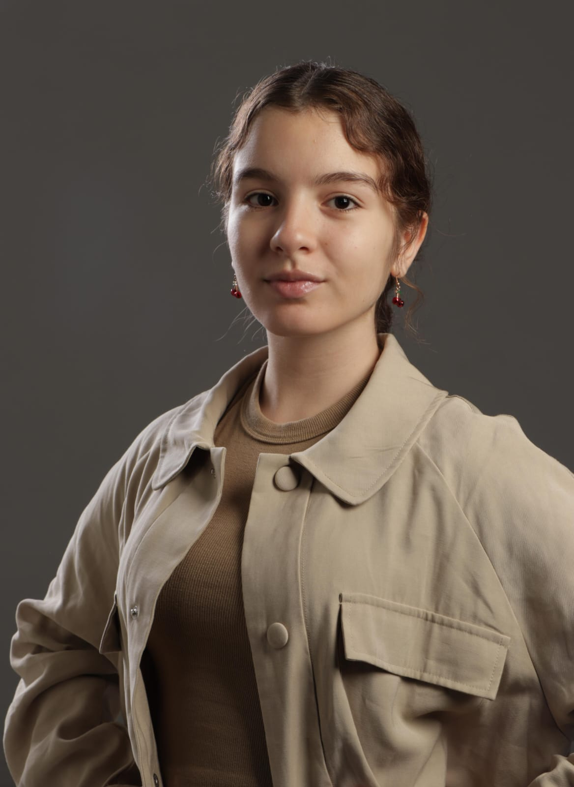

Contate-me
para mais informações sobre mim e meu trabalho


Minhas habilidades técnicas incluem: Pacote Adobe (Photoshop, Premiere Pro, Illustrator); conhecimento de câmera e iluminação. Possuo como habilidade social a comunicação eficaz, trablho em equipe, liderança, resolução de problemas e gestão de projetos. Estudante do curso cinema e audiovisual na ESPM-SP, tenho certificado de proeficiência na língua inglesa de nível C1.
Sem Juízo Final (2024), foi um curta produzido no primeiro semestre do curso de Cinema e Audioviusal da ESPM-SP, onde eu atuei como diretora de fotografia e assistente de montagem. Em um dia comum, Guto e Marcela descobrem por meio de um biscoito da sorte que não só suas vidas, mas que O MUNDO INTEIRO IRÁ ACABAR!! Com poucos dias restantes, eles decidem fazer tudo aquilo que perderam de suas vidas com o tempo que resta.